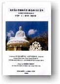
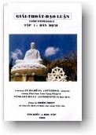

|  |
GIẢI THOÁT
ĐẠO LUẬN Thiện Nhựt chuyển dịch sang tiếng Việt |
 |
|
BuddhaSasana Home Page |
Vietnamese, with Unicode Times font |
|  |
GIẢI THOÁT
ĐẠO LUẬN Thiện Nhựt chuyển dịch sang tiếng Việt |
|
|
Phẩm 4: Phân biệt về Định Hỏi: Vào thời kia, người ngồi thiền đã giữ giới luật được thanh tịnh, đang an trú trong cảnh giới thiện lành nhứt, cần nên làm thêm điều gì? Đáp: Là khiến cho định được khởi lên.Hỏi: Thế nào là định? Hình tướng của định ra sao? Định có công năng (= vị) gì? Khởi lên ra sao? Do đâu (= xứ) mà ra? Người nào thọ nhận thực hành? Thiền, giải thoát, định (-tâm), chỉ (= ý ngưng lại), cảm thọ khác nhau ra sao? Có bao nhiêu nguyên nhân đưa đến định? Điều gì làm định khởi lên, làm định bị trở ngại? Có mấy pháp về định? Công đức của định có những gì? Cần bao nhiêu điều có trước rồi định mới khởi lên? Có mấy loại định? Định khởi lên cách nào? Đáp: Định có nghiã là tâm thanh tịnh, gom về một hướng, tinh tấn và vắng lặng an trú trong chơn lý chơn chánh, chẳng hề bị loạn động.Lại nữa, ngọn gió mãnh liệt của phiền não chẳng thể làm nghiêng ngả được tâm tư, cũng tựa như ngọn đèn chẳng lay động treo trong đại sảnh nơi cung điện. Như có nói trong A-tỳ-đàm (Abhidhamma, Luận tạng): "Nếu tâm an trú đúng đắn, chẳng bám vịn vào đâu, cũng chẳng loạn động, yên vắng, chẳng bị ràng buộc, khiến cho định căn (= khả năng đắc được Định) và định lực sức mạnh của Định được đúng đắn; đó gọi là định." Định: hình tướng, công năng, khởi lên ra sao và từ đâu? Tâm an trú là hình tướng của định. Điều phục được sự oán hờn là vị của định (hay công năng của Định, tức là nhờ Định mà dẹp bỏ được oán hờn). Yên vắng là sự khởi phát của định. Vào chỗ ô nhiễm chẳng bị nhuốm dơ, tâm được giải thoát, đó gọi là nơi (xứ) mà định được khởi phát lên. Người đang tập định như thế nào? Tâm, tâm sở (= các tâm trạng), và các phương tiện (= ở đây có nghiã là khả năng), đều quân bình (= ngang nhau), tựa như tay cầm cây cân đòn, như dầu đựng trong chén. Chánh niệm và tinh tấn cùng đi song hành ngang nhau, cũng tựa như bốn con ngựa, sức mạnh đồng nhau, cùng kéo một cổ xe. Các nghĩ suy đứng dừng lại, như người thợ làm tên đang chú tâm vót tên cho thật thẳng. Định cũng như liều thuốc giải được chất độc, vì định làm tiêu nỗi oán hờn. Như A-tỳ-đàm có nói: "Ý nghiã của Định là sự liễm nhiếp" (liễm = thâu góp lại; nhiếp = thay thế và bao trùm hết lại). Theo ý nghiã nầy của chữ Định là có được một định nghiã hàm súc đầy đủ. Thiền, là nói tới sơ thiền cho đến tứ thiền. Giải thoát, là nói đến tám pháp giải thoát, như pháp "có sắc tướng bên trong, quán sắc bên ngoài" và bảy pháp khác. Định , là nói đến ba pháp định: có giác (= biết, còn gọi là tầm), có quán (= suy tư, còn gọi là tứ) và vân vân.Chánh thọ nói đến chín cấp bực thiền định. Thiền là gì? Đó là tư duy (= suy nghĩ) về sự (= đối tượng), suy xét về điều oán hờn, làm cho tâm được sự mừng vui, thoát các chướng ngại, khiến tâm trở nên bình đẳng, có đủ phương tiện để đắc định, được sự tự tại (= tự do, ở đây có nghiã đã thuần thục, chẳng còn ngại gì), chẳng dùng đến hai nghiã (= liễu nghiã, nghiã rốt ráo; bất liễu nghiã, nghiã còn chưa rốt ráo), mà vẫn trú vào chánh thọ, để được giải thoát. Định đem đến các công đức nào? Thấy có bốn công đức khi định được khởi lên. Bốn công đức nào? Đó là: hiện được an trú trong nguồn vui của Pháp, vui hưởng tất cả sự vật nhờ quán tưởng, chứng được thần thông, vươn lên đến khắp mọi cõi. Thế nào là "hiện được an trú trong nguồn vui của Pháp"? Người đắc định sanh ra vô lậu (= dứt sạch các phiền não), tâm sảng khoái nếm được niềm vui xuất thế, hiện thấy được và an trú trong nguồn vui của Chánh Pháp. Do đó, Thế Tôn có nói: "Người ấy thân giữ trong sự tĩnh lặng, sanh ra mừng được sự mát mẻ khiến cho từ từ được thành tựu hoàn toàn đầy đủ." Lại nữa, Đức Phật có bảo các Tỳ-kheo rằng: "Trước ta tập hạnh Ni-càn-tử (Nigantha, phái khổ hạnh loã thể), bảy ngày bảy đêm thân chẳng lay động, miệng chẳng mở lời, ngồi im lặng hưởng thọ niềm an lạc." Đó là thấy được Pháp và hiện an trú trong nguồn vui của Thánh Pháp. Thế nào là "vui hưởng tất cả mọi sự vật nhờ quán tưởng"? Người ngồi thiền được định, tâm chẳng bị năm triền cái bao phủ (triền cái = năm món che đậy), trở nên mềm dịu dễ kham việc quán tưởng các sự vật, phân biệt rõ ràng các ấm (năm uẩn = sắc, thọ, tưởng, hành, thức), các nhập (sáu nhập = mắt, tai, mũi, lưỡi, thân, ý), các giới (= mười tám giới, từ nhãn giới đến ý thức giới), nên được sự tư tại, an lạc (đối với sự vật và hoàn cảnh). Vì thế, Thế Tôn dạy, chư Tỳ-kheo nên tu hành như thế, dùng định tâm quán sát tất cả để biết muôn sự vật đúng y như thật. Thế nào là "chứng được thần thông"? Người đã đắc định tâm chứng được năm môn thần thông là như ý túc (biến hiện theo ý muốn), thiên nhĩ (lỗ tai Trời nghe xa), tha tâm (biết ý nghĩ kẻ khác), túc mạng (biết được đời kiếp trước), thiên nhãn (mắt Trời). Vì thế, Thế Tôn có nói, tâm đã đắc định, thì tùy nghi chuyển biến mọi sự như thể theo ý mình muốn. Thế nào là "vươn lên đến khắp mọi cõi" (nguyên văn: hữu cụ túc; hữu, ở đây, có nghiã là cõi, ba cõi: dục giới, sắc giới và vô sắc giới)? Người đã được định tâm, dầu chưa đến bực vô học (= bực A-la-hán, đã dẹp xong tất cả phiền não, nên chẳng cần học thêm nữa) nhưng rốt ráo cũng được chẳng lùi sụt. Nhờ định mà được báo thân (= thân còn chịu nghiệp báo) sanh vào cõi sắc giới, cõi vô sắc giới, vươn lên khắp mọi cõi. Như Đức Phật có nói: "Dầu người tu chút ít về sơ thiền cũng được sanh làm quyến thuộc (= bà con thân thích) của Đức Phạm Thiên (trên cõi Trời sắc giới); tất cả mọi chủng loại đều được như thế cả." Trên đây là bốn công đức khởi lên nơi người đắc định. Có mấy chướng ngại cho định tâm? Có tám: thú vui (làm thoả mãn các giác quan), giận hờn, lười biếng, mê ngủ, đùa bỡn, nghi hoặc, vô minh (= si mê), chẳng mừng vui. Tất cả các điều dữ ác đều làm trở ngại cho định tâm. Có mấy nguyên nhân khởi lên Định? Có tám nguyên nhân khiến cho tâm được định: dứt bỏ, chẳng giận, tướng sáng (= sự thông minh, có trí huệ), chẳng xao động, và tất cả các pháp thiện lành khiến tâm mừng vui sanh ra trí huệ. Các điều nào cần phải có rồi định mới khởi? Có bảy loại: giới, vừa ý biết đủ, che giữ các căn, ăn uống có tiết độ, đầu hôm nửa đêm và hừng sáng chẳng mê ngủ, thường niệm trí huệ, ở nơi vắng lặng. Định có mấy loại? Định có hai loại: thứ nhứt, thế gian định; thứ hai, xuất thế gian định. Việc đắc được các Thánh quả (= bốn quả vị Tu-đà-huờn, Tư-đà-hàm, A-na-hàm và A-la-hán) thuộc về định xuất thế gian (xuất thế, ở đây, có nghiã là vượt khỏi sự ràng buộc của cuộc đời thế tục). Các thứ Định còn lại đều thuộc về thế gian định. Các thứ định thế gian nầy còn hữu lậu (= còn phiền não), còn kết sử (= điều trói buộc và sai sử), còn ràng buộc, là nước lụt, là ách nặng, là che úp, là cướp giới cuớp chánh kiến, là bám níu, là phiền não. Có đối trị được với các hình tướng của các định thế gian rồi thì mới đáng gọi là định xuất thế.Lại nữa, định có hai loại: tà định và chánh định. Thế nào là tà định? Chẳng khéo giữ nhứt tâm, đó gọi là tà định. Khéo giữ nhứt tâm gọi là chánh định. Tà định cần được dẹp bỏ; chánh định cần nên tu tập. Lại nữa, định có hai loại: ngoại định và an định. Phần định mới khởi đầu thì gọi là ngoại định. Trừ được sự gián đoạn ngăn cách rồi mới gọi là an định. Lại nữa, định có ba loại: định có giác có quán, định chẳng giác ít quán và định chẳng giác chẳng quán. Thế nào là định có giác có quán? Đó là Sơ thiền (= thiền cấp 1) có giác (còn gọi là tầm), có quán (còn gọi là tứ); Nhị thiền (= thiền cấp 2) hết giác mà còn chút ít quán. Các cấp thiền còn lại thì chẳng có giác chẳng có quán. Lại nữa, định có ba loại: định sanh có mừng sanh, định sanh có vui sanh, định sanh có xả sanh. Nơi Sơ thiền và Nhị thiền, định sanh ra cùng với nỗi mừng (= hỉ). Nơi Tam thiền, định sanh cùng với niềm vui (= lạc). Nơi Tứ thiền, định khởi lên cùng với niệm buông xả (= xả). Lại nữa, định có ba loại: thiện định, báo định và sự định. Thế nào là thiện định? Người tu học Thánh đạo, cùng với người thường tu sắc định và vô sắc định, đó gọi là thiện định (= định khéo). Còn người tu học Thánh quả cùng với phàm phu được sanh cõi sắc giới, cõi vô sắc giới, đó gọi là báo định (được định nhờ nghiệp báo). Bực vô học (đã chứng quả vị A-la-hán) được sắc định và vô sắc định, đó gọi là sự định (định có đối tượng thực tại). Lại nữa, định có bốn loại: dục định, sắc định, vô sắc định, vô sở thọ định. Tất cả các hành động được làm theo đúng chánh thọ, đó là dục định. Bốn cấp thiền là sắc định. Bốn cấp vô sắc định và nghiệp báo lành là vô sắc định. Bốn thánh đạo và bốn thánh quả là vô sở thọ định. Lại nữa, có bốn cách tu hành về định: độn trí khổ tu, lợi trí khổ tu, độn trí vui tu, lợi trí vui tu. (độn căn, độn trí = có trí chậm chạp; lợi căn, lợi trí = có trí thông minh lanh lợi). Có bốn hạng người nầy: thứ nhứt, có nhiều phiền não sâu dầy; thứ hai, phiền não thưa thớt; thứ ba, căn trí lanh lợi; thứ tư, trí óc cùn nhụt. Nơi người độn căn còn nhiều phiền não sâu dầy cần tu hành khó nhọc thì độn trí mới đắc định. Nơi người lợi căn mà phiền não còn sâu dầy, cần khổ tu thì lợi trí đắc định. Nơi người độn căn mà phiền não thưa thớt, nếu vui tu thì độn trí đắc định. Nơi người lợi căn mà phiền não thưa thớt, nếu vui tu thì lợi trí đắc định. Như thế, người phiều não sâu dầy, vì cớ còn phiền não cần phải chiết phục (= dẹp, trừ bỏ), do đó việc tu hành mới khó nhọc. Người độn căn, vì cớ căn cơ chậm chạp, cần hành thiền lâu dài để làm thức dậy trí óc cùn nhụt, do đó trước mới gọi đó là độn trí. Dùng phương tiện đó để phân biệt tất cả. Lại nữa, định có bốn loại: định nhỏ về sự việc nhỏ, định nhỏ về sự việc vô lượng, định vô lượng về sự việc nhỏ, định vô lượng về sự việc vô lượng. Thế nào là định nhỏ về sự việc nhỏ? Định chẳng theo kịp chỗ tâm đã đắc định về sự việc nhỏ, vì ít tinh tấn, đó gọi là định nhỏ về sự việc nhỏ. Thế nào là định nhỏ về sự việc vô lượng? Định chẳng theo kịp chỗ tâm đã đắc định về sự việc vô lượng, với nhiều tinh tấn, đó gọi là định nhỏ về sự việc vô lượng. Thế nào là định vô lượng về sự việc nhỏ? Định theo kịp chỗ tâm đã đắc định về sự việc nhỏ, với ít tinh tấn, đó gọi là định vô lượng về sự việc nhỏ. Thế nào là định vô lượng về sự việc vô lượng? Định theo kịp chỗ tâm đã đắc định về sự việc vô lượng, với nhiều tinh tấn, đó gọi là định vô lượng về sự việc vô lương. Lại nữa, định có bốn loại: dục định, tinh tấn định, tâm định, huệ định. Dục định là y theo ý muốn mà tu đắc định. Y theo sự tinh tấn mà tu đắc định gọi là tinh tấn định. Y theo tâm mà tu đắc định gọi là tâm định.Y theo trí huệ mà tu đắc định,gọi là huệ định. Lại nữa, định có bốn loại: định Phật đắc Thanh văn chẳng đắc được, định Thanh văn đắc mà chẳng phải chỗ Phật đắc, định Phật đắc, Thanh văn cũng đắc, định chẳng phải chỗ đắc của Phật và của Thanh văn. Định đại bi, định song biến là chỗ đắc của riêng Phật, hàng Thanh văn chẳng đắc được. Định về quả vị hữu học (= ba quả đầu tiên của Thanh văn) là chỗ đắc của hàng Thanh văn, chẳng phải của Phật. Định cửu thứ đệ (chín cấp từ sơ thiền đến diệt tận định) và định về quả vị vô học (= cấp A-la-hán trở lên) là chỗ đắc của Phật và Thanh văn. Vô tưởng định chẳng phải là chỗ đắc của Phật và Thanh văn. Lại nữa, định có bốn loại: (1) định duyên khởi duyên diệt, (2) định duyên diệt chẳng duyên khởi, (3) định duyên khởi chẳng duyên diệt, (4) định chẳng duyên khởi chẳng duyên diệt. Hỏi: Thế nào là duyên khởi chẳng duyên diệt? Đáp: Nơi cõi dục giới, định khéo và định chẳng khéo là định duyên khởi chẳng duyên diệt. (Duyên khởi = làm nhơn duyên cho sự khởi sanh ra; duyên diệt = làm nhơn duyên gây ra sự tiêu diệt). Định về về bốn Thánh đạo là định duyên diệt chẳng duyên khởi. Định khéo của bực hữu học và của phàm phu về cõi sắc giới và cõi vô sắc giới là định vừa duyên khởi vừa duyên diệt. Tất cả các định về quả vị và sự định đều là định chẳng duyên khởi chẳng duyên diệt.Lại nữa, định có bốn loại: sơ thiền, nhị thiền, tam thiền và tứ thiền. Lià được năm triền cái và thành tựu được giác (= tầm), quán (= tứ), hỉ (= mừng), lạc (= vui), nhứt tâm (= tâm an trú), đó là Sơ thiền. Lià được giác, quán và thành tựu được ba thiền chi (= gồm có hỉ, lạc và nhứt tâm) là Nhị thiền. Lià thêm được hỉ và thành tựu hai thiền chi (gồm có lạc và nhứt tâm) là Tam thiền). Lià được lạc và thành tựu được xả và nhứt tâm thì được Tứ thiền. Lại nữa, định có năm loại: sơ thiền, nhị thiền, tam thiền, tứ thiền và ngũ thiền. Ngũ thiền tức là năm thiền chi: giác, quán, hỉ, lạc, nhứt tâm. Lià được năm triền cái, thành tựu được năm thiền chi, đó gọi là Sơ thiền. Lià giác, thành tựu bốn thiền chi, đó gọi là Nhị thiền. Lìa hỉ và thành tựu hai thiền chi, đó gọi là Tam thiền. Lià thêm lạc và thành tựu hai chi còn lại, tức là xả và nhứt tâm, thì đắc Tứ thiền. Hỏi: Tại sao lại nói tứ thiền cùng với ngũ thiền? Đáp: Vì tùy theo hai hạng người khác nhau mà Nhị thiền có tới hai loại: loại (1) chẳng giác chẳng quán, và loại (2) chẳng giác mà còn chút ít quán. Vì thế, nên có ngũ thiền.Hỏi: Bằng cách nào người ngồi thiền chuyển từ Sơ thiền sang Nhị thiền? Đáp: Nơi giác và quán còn thô, người ngồi thiền thâu nhiếp niệm tư duy lại, rồi thấy các sự bất lợi của giác và của quán, liền khởi lên sự chấm dứt giác, quán, nơi Nhị thiền. Bằng cách đó, người ấy tuần tự tu tiếp cho đến Tứ thiền.Lại có người khác cũng từ Sơ thiền chuyển khởi sang Nhị thiền. Người ấy từ giác còn thô, thâu nhiếp sự tư duy lại, nhận được sự bất lợi của giác, đồng thời thấy ra mất giác còn chút ít quán, nên khởi lên được Nhị thiền. Do theo đấy, người ấy tuần tự tu cho đến Ngũ thiền. Vì lẽ đó mà có nói đến Ngũ thiền. Lại nữa, có năm loại định được gọl là năm phần của chánh thọ: hỉ mãn, lạc mãn, tâm mãn, quang mãn và quán tưởng. Nơi Sơ thiền và Nhị thiền, tràn đầy nỗi mừng (hỉ mãn = mừng tràn đầy). Nơi Tam thiền, niềm vui tràn đầy (lạc mãn = vui tràn đầy). Biết được tâm của kẻ khác, đó gọi là tâm mãn (= tâm mở rộng ra khắp). Có được thiên nhãn thông (= mắt Trời thấy xa), đó gọi là quang mãn (quang = ánh sáng; mãn = tràn đầy). Theo dõi được mọi tư tưởng, định khởi lên quán sát trí, đó gọi là quán tưởng. Lại nữa, định có năm loại gọi là năm trí chánh định. Định đó do từ niềm vui trong hiện tại và vị lai, theo thân trí mà khởi lên. Định đó được bực Thánh thực hành, chẳng còn phiền não. Định đó được bực trí huệ tu tập. Định đó yên vắng, khoái lạc, nhưng dầu chỗ đắc là vô song nhưng vẫn còn chưa khuất phục được việc sanh tử. Định đó an vui cao nhứt, theo tánh của chỗ sở đắc vẫn chẳng khuất phục được sanh tử và ngã kiến. Định đó, niệm nhập (nhập = vào), niệm khởi đều y vào thân trí mà khởi lên. Lại nữa, đã phân biệt phạm vi của định, sự tu hành với các giai đoạn đầu, giữa và chót, đã biết định có nhiều loại, nhưng cũng nên hiểu rằng tất cả định đều qui về bốn loại thôi. -ooOoo-
Ðầu trang |
Mục lục |
Chân thành cám ơn Cư sĩ Thiện Nhựt đã gửi tặng bản vi tính (Bình Anson, 01-2004)
[Trở
về trang Thư Mục]
last updated: 16-01-2004